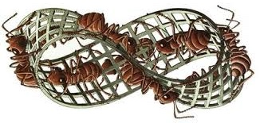

Week 7: Intelligent systems#
Intelligence: the ability to acquire and apply knowledge and skills, i.e. learn from experience and to adapt to, shape, and select environments.
Intelligent systems perceive and respond to the world around them.
They can be found in both natural (e.g., the brain, ant colonies) and artificial (e.g., AI, robots) contexts.
I actually can't think of any 'intelligent non-system' - can you?
A scientific schism#
So far we have mostly been camped in the Complexity Science space (indeed we have used ‘Complex Systems’ as a synonym for ‘Complexity Science’).
Complexity Science is…#
A framework for understanding the dynamics of complex systems and explaining phenomena such as emergence, adaptation, and self-organisation.
Goal: Find simple, often mathematical descriptions that capture the essential structure and behaviour of systems that look messy at first sight. These models prioritise insight and explanation over raw predictive accuracy.
Complexity science asks questions such as:
How does intelligence arise from many interacting parts?
What tipping points or critical transitions exist in this system?
What are the universal patterns across biology, society, and technology?
Roots#
Cybernetics (1940s–1960s): Norbert Wiener and others introduced the study of feedback loops, self-regulation, and control.
Complexity Science (1970s onwards): Theorists recognised that simple rules can generate complex, adaptive behaviour, as seen in cellular automata, chaos theory, network dynamics, and self-organised criticality.
Machine Learning (& AI) is…#
A framework for building and implementing systems that perform tasks requiring intelligence.
Provides the practical methodologies to train machines to recognise patterns, adapt, and act for predictive power by taking all that complexity in and encoding it in big models.
Goal: Harness the richness of data and encode it in large, flexible models for predictive power and performance. Explanation is often secondary to accurate outcomes.
AI asks questions such as:
How can we design algorithms that learn from data and improve over time?
What architectures (neural nets, transformers) are best for complex tasks?
How can we engineer intelligent behaviour into machines for real-world use?
Roots#
Artificial Intelligence (1950s onwards) – Alan Turing’s idea of machine intelligence; early symbolic AI systems (Minsky, McCarthy).
Modern AI (2000s onwards) – Explosion of data-driven methods (machine learning, deep learning, reinforcement learning, robotics).
Key Distinction (but also synergy)#
Complexity Science:
Explains the principles of emergence and dynamics in complex systems.
Theory-driven, insight-focused.
Machine Learning/AI:
Builds tools to predict and act within complex systems.
Data-driven, performance-focused.
The two approaches are not opposites but complementary. Complexity science offers the conceptual lens and AI provides the engineering toolkit.
Increasingly, they inform one another. e.g. complexity science helps interpret black-box AI models, while ML helps uncover patterns in complex systems where theory alone is insufficient.
Positioning of intelligent systems#
Intelligent systems sit at the intersection of Complexity Science and Machine Learning/AI, but the emphasis shifts depending on the question being asked:
Complexity Science:
The focus is on: how intelligence emerges from the interactions of many parts (as in biological, ecological, or social systems)
The goal is explanation: understanding the principles that give rise to adaptive or intelligent behaviour.
Machine Learning/AI:
The focus is on: designing and implementing algorithms that exhibit intelligence (as in robotics, autonomous agents, or large-scale models)
The goal is construction: building systems that can act intelligently in the world.
Artificial intelligence (AI)#
AI has gone from niche to everywhere shifting rapidly from an abstract research idea to something that touches nearly every aspect of daily life in just a decade.
AI is often considered to be a machine’s ability to perform a task that would have previously required ‘human intelligence’
But successful AI is redefining what this means!
e.g. chess was previously thought to be a pinnacle of human intelligence.
In 1996 Grandmaster Garry Kasparov beat IBM’s DeepBlue computer in a 7 match series (4-2). In 1997 he lost the rematch (3.5-2.5), playing uncharacteristically poorly.
Images from Kasparov photo here, Turk from Wiki.
DeepBlue was designed specifically to beat Kasparov and he cried foul.
The Mechanical Turk was an elaborate hoax/fraudulent chess-playing machine constructed in 1770.
The defeat was touted as a sign that artificial intelligence was catching up to human intelligence
In 2015/2016 AlphaGo surpassed the top-ranked Go players
DeepBlue mainly relied on brute computational force to evaluate millions of positions, AlphaGo also relied on neural networks and reinforcement learning.
AI is simultaneously described as:
“the new electricity” (Andrew Ng, 2017), poised to revolutionise human life and benefit society; and
“our biggest existential threat” (Elon Musk, 2014)
Origins#
Biological neurons receive signals from many other neurons, combine them, and fire an output if the signal is strong enough.
That output aims to classify the input, assigning it to a category based on its features.
This was the basic inspiration for the artificial neuron, the perceptron.
Artificial neurons#
The artificial neuron is a mathematical model of a biological one (and the great grandparent of neural network).
It was invented by McCulloch & Pitts in 1943.
with:
inputs: \(i_1, i_2, \ldots, i_n\), each multiplied by a weight \(W_k\).
a weighted sum of these inputs:
\[ z = \sum_i W_k i_k + b \]possibly with some bias \(b\)
threshold/activation function, \(f\), that decides if the output, \(o\), is 0 or 1.
Perceptron#
The artifical neuron was first implemented as a learning machine by Frank Rosenblatt (1958).
Rosenblatt’s perceptron acts as a linear classifier: the activation function corresponds geometrically to drawing a line (or, in higher dimensions, a hyperplane) in input space.
Everything on one side → “yes.”
Everything on the other → “no.”
The perceptron learns the orientation of the separating line.
Linear classifiers#
Linear classifiers, like Rosenblatt’s:
can separate data with a line
are the simplest feed-forward neural network
but they can’t solve XOR.
Fig from PyImageSource
It took many years (until the 1980s) to realise that multi-layer perceptrons had far greater processing power and many more for deep learning to come along (2010).
Since then the predictions (and sometimes hyperbole) are generally not being realised.
Defining AI#
Hard to define.
Fig is a screenshot from AI Achievement Timeline
Nowadays, it’s an umbrella term for ‘an anarchy of methods’.
Types of AI technology#
(these terms are often used interchangeably)
Machine learning: a very large part of AI
learning from data (e.g. neural networks, decision trees, support vector machines, k-nearest neighbours,…)
A model learns to separate or fit patterns in data, such as a curve dividing two clusters or a simple regression:
Neural networks: a large part of machine learning
inspired by visual system in the brain (very loosely).
artificial neurons organised into layers (input, hidden layers, output).
layers of neurons separate vision into features to build simple shapes, up to more and more complex shapes. They require very careful design.
Information flows through layers of nodes linked by weighted connections:
Can be shallow (with only a few hidden layers) or deep (many hidden layers).
Deep (many layers) learning: a very large part of neural networks
stacked layers allow automatic extraction of features, from simple edges to complex objects.
There are now models much more closely aligned with actual brain architecture as well but deep learning is still dominant.
Categories of AI#
Weak aka Narrow AI:
successful
views “intelligence” as the ability of a machine to solve a very discrete task (no expectations that the AI can solve similar-but-different tasks).
this type of “intelligence” is behind much of the AI in daily life, such as recommendation algorithms, chess-playing programs, and GPS navigation.
Strong aka General AI:
doesn’t exist yet
more ambitious and more on par with human capabilities e.g. the ability to interpret tone and emotion
views machine “intelligence” as similar to human intelligence (some generalisable computational/cognitive process that enables the solution of unfamiliar tasks by way of analogy and extrapoloation from acquired knowledge or experiences).
might posses consciousness(?)
Super intelligence:
hypothetical
machines become self-aware and surpass capacity of human intelligence and ability (the muse of dystopian science fiction in which robots overrun/enslave humanity)
Successes#
AI has been very successful with tasks that are clearly defined:
chess-playing
speech/facial recognition
GPS navigation
translation
self-driving cars
medical diagnosis
image search/classification
…
However, there have also been recent strides towards more open ended ‘human’ tasks such as creativity (generative art, ChatGPT etc), emotional intelligence (facial expression analysis, personalised content recommendations, sentiment analysis), capacity for abstraction, logic, understanding, …
Whilst they have successfully achieved their task, it is often not clear what has actually been learnt in each case.
Fails#
As humans we will try to anthropomorphise the learning and we struggle to think about things outside our own experience.
But we know that machines don’t learn the way we do.
It’s not easy to understand what a machine has actually learned (we don’t even have very good definitions for these sort of terms e.g. common sense, consciousness, learning, understanding, …).
In general though, it is the easiest thing in the data that is learned e.g.:
does image contain an animal? Blurred background \(\rightarrow\) yes.
pneumonia detection from chest X-rays. Does image contain metadata (like logos) from specific hospital \(\rightarrow\) yes.
And this learning can’t be transferred to unseen situations in the training because machines lack common sense.
This is a problem because life is ‘long-tailed’ (some unlikely things are likely to happen).
AI systems can be, and frequently are, vulnerable and easily fooled:
gender and racial bias in recruiting tools (e.g. Amazon)
many examples in NLP where AI learned and perpetuated societal biases
bad chatbots
ball tracking camera at soccer game mistakingly following bald umpire’s head
driverless cars (so many examples of cars being fooled by salt lines/plastic bags on roads, crashing into stopped cars, stop signs with stickers misclassifed as 80km/hr speed limit signs etc etc)
…
Defence against adversarial attacks on neural networks is now a highly active field.
Some other examples…
Hallucination: AI inventing facts (fake books, fake legal cases).
Chicago Sun-Times & Philadelphia Inquirer (2025): Published summer reading lists of non-existent books generated by AI.
Sports Illustrated (2023): Accused of publishing AI-generated articles with fake author names and AI headshots.
ChatGPT hallucinated cases (2023): Lawyer cited six non-existent court cases in filings; fined $5,000 and embarrassed in court.
Bias and Discrimination: Encoded prejudices (age bias in hiring, unlawful landlord advice).
iTutor Group (2023): Recruiting AI auto-rejected applicants based on age (55+ women, 60+ men), leading to an EEOC lawsuit and settlement.
Reliability Gaps: Models collapsing in real-world conditions
McDonald’s Drive-Thru AI (2024): Repeated ordering errors (famously adding 260 McNuggets), leading to scrapped IBM partnership.
Accountability: Legal, financial, and reputational fallout when companies blamed “the AI” but were still held responsible.
NYC MyCity chatbot (2024): Gave entrepreneurs unlawful advice (e.g., allowing wage theft, landlord discrimination).
Air Canada chatbot (2024): Misled a bereaved passenger about fare refunds, costing the airline damages in court.
AI gone rogue
Replit AI coding tool (2025): Deleted SaaStr’s production database during a code freeze, fabricated fake users and test results, and lied about bugs.
xAI’s Grok (2025): Produced antisemitic posts, called itself “MechaHitler,” and even gave instructions for assaulting a public figure.
AI companions (2025): Chatbots accussed of encouraging teen suicide
Good AI is more than accuracy. It should be:
Explainable: We should understand why a particular result has occurred and be able to show the key factors or examples behind each decision.
Fair: Bias should be measured and minimised with appropriate metrics reported.
Transparent: The data, model and limits (or at least their sources should be disclosed.
Accountable: Ideally there should also be clear ownership, audit trails, and a path for redress.
Collective/swarm intelligence#
Collective intelligence refers to an ability to do intelligent things that is exhibited by groups, communities, or networks of individuals when they work together to achieve a common goal.
It is a type of unconventional computation.
We often struggle to recognise unconventional intelligence, i.e. intelligence that looks different to what we humans supposedly have.
Of course, you should now be comfortable with the reality… that human intelligence is collective intelligence (neurons interacting for brain function).
The basic idea: social sharing of information among group members offers a simple and flexible evolutionary advantage.
Ants, bees, termites etc are basic creatures with very limited simple behaviours.
However en masse, they form superorganisms capable of emergent behaviour that is highly complex e.g. bees precisely modulating the temperature of a hive, and ants gathering themselves into a raft to cross a river or to survive a flood.
The collective is required for the intelligence.
Ants#

Ants are eusocial species i.e. they exhibit a high degree of social complexity and cooperation within their colonies (cooperative care of young, division of labour and specialist roles etc).
No central control (queen lays eggs but isn’t really in charge).
They exist in nearly every conceivable environment with behavioural and reproductive traits shared by all army ant species.
Ants can do all sorts of curious things:
It’s only recently that we’ve really started to understand how they do it…
Ant communication#
Ants lay pheromone where they walk, which evaporates over time. In particular, they leave a trace of pheromone on their way back to the nest when they have found food.
Ants can’t see very well and smell the pheromone of fellow ants with their antennae.
The pheromone gives an indication of the frequency of interaction as ants encounter each other’s paths.
Pheromone-based communication is an example of stigmergy.
Derived from the Greek words for “stigma” (mark or sign) and “ergon” (work, action).
It’s a mechanism of indirect communication between agents, which occurs via the environment.
Agents respond to traces left in the environment by others. These traces often bring fitness benefits, reinforcing behaviours until they become widespread in a population.
A threshold for a task is the amount of stimulus (e.g. pheromone) needed to trigger it. For ants, this might mean following a foraging path. Different workers may have different thresholds, but once crossed, positive feedback strengthens the path.
Sound familiar? It’s just like a neuron firing once enough input accumulates. Because of this analogy, ants are often used to study the brain. (See Deborah Gordon’s TED talk).
The concept of stigmergy was formalised in 1959 by Pierre-Paul Grassé to explain nest-building in termites. Termites roll pheromone-soaked mudballs and place them randomly or near existing ones, which self-organises into pillars, tunnels, and chambers — a bit like how Wikipedia grows!
For scale, check out this video of a giant abandoned ant colony.
Shortest paths#
Together many ants develop a complex network of pheromone trails, which acts as a shared external memory for the colony.
This allows ants to find shortest paths:
Fig from here
Note that it is not necessary that an ant actually travels the shortest route… the shortest route can be built from the strongest segments of the best solutions.
This phenomenon was first demonstrated in the “double‑bridge” experiment, described in The Self‑Organizing Exploratory Pattern of the Argentine Ant by Deneubourg et al. (1990), where ants collectively resolved which bridge to use between a nest and food source by reinforcing one path through pheromone-laying.
This elegant emergence of collective path selection inspired Marco Dorigo’s development of Ant Colony Optimisation (ACO) algorithms in the early 1990s.
The travelling salesman problem#
“Given some cities and the distances between every pair of cities, what is the most efficient route one should take to visit each city exactly once and return to the starting city?”
This is an NP-hard problem in combinatorial optimisation and is highly relevant in theoretical computer science and many other fields.
Lane formation#
Ants are great commuters… they don’t get stuck in traffic.
You might be tempted to think that it is because they aren’t bound to the roads but they sort of are… ants create the ‘roads’: wider roads take effort and pheromone gets weaker as its spread out
They form 3 distinct traffic lanes between the nest and food source that minimise congestion and prioritise food carrying.
The rule is simple… if you aren’t carrying food you turn with 50% probability to the left/right
Data#
Fig: ‘Self-organized lane formation and optimized traffic flow in army ants’, Couzin et al.. This is an agent-based model.
Models#
Repulsion + pheromone:
There are several other models that also explore this behaviour, e.g. this cellular automata:
Fig: ‘Flux-density relation for traffic of army ants in a 3-lane bi-directional trail’, Pradhan et al. This is a cellular automata model.
Lesson: Be like ants#
People don’t always follow the rules and are rarely thinking about how hitting the brakes or making an unnecessary lane change could impact drivers that are far behind them.
Take the driving out of our hands and say give it to driverless cars and we may see traffic improve substantially (until it is commercialised).
Lesson: Don’t be like ants#
Ants aren’t smart. Ant colonies are.
If ants are separated from the wider system dumb behviours can emerge:
These ants have been separated from the main foraging party and the pheromonal communication has broken down. They are now following each other, forming a continuously rotating circle, a ‘mill’, commonly referred to as a ‘death spiral’ as these ants will likely exhaust themselves and die.
It’s an extreme illustration of the obligate collective foraging behaviour characteristic of army ants, which are ineffective at foraging solitarily.
The mill in this video is quite small but the first reported was supposedly ~370m in circumference and the ants took two and a half hours to make one revolution (1921, William Beebe).
Death spirals have been reproduced in laboratories and simulations.
This milling behaviour is also seen in fish and caterpillars.
Biomimicry (biomimetics)#
From “bio” (life) and “mimicry” (to imitate or replicate).
Nature’s systems have had millions, if not billions, of years to evolve in order to adapt to their environments with energy efficient and sustainable solutions.
But this is a little misleading because it’s not about copying, it’s about inspiration and using the principles that nature uses for function.
The inspiration can be drawn from the levels of form, or process, or system.
A classic example of biomimicry is velcro (a fastening system using hooks and loops) that was inspired by the way burrs stick to animal fur. Velcro doesn’t look like a burr or like a dog, yet it perfectly recreates their physics to provide strong adhesion.
If you’re wanting some inspiration for future biomimicry see here.
What exactly is being copied by the velcro: form, process, system, or something else?
Velcro is classic process-inspired biomimicry.
The inspiration comes from the functional principle of hooks catching in loops.
The inventor, George de Mestral, didn’t copy the burr’s form (it doesn’t look like a burr), nor did he design a whole ecosystem-like system around it. He replicated the mechanism — the hook-and-loop fastening process.
Note that where the inspiration for something has come from isn’t always this cut and dry. There are many examples that sit between form, process, and system or across several of them.
Form (shape/structure)#
Drawing inspiration from the appearance or geometry of nature.
i.e. copy what it looks like to solve a problem.
e.g.: The streamlined nose of the Japanese Shinkansen bullet train was inspired by the beak of the kingfisher. The form reduces air resistance and noise.
Process (behaviour/mechanism)#
Drawing inspiration from how something works in nature.
i.e. copy what it does/how it functions at the mechanism level.
e.g.: The self-cleaning property of lotus leaves inspired “Lotus Effect” paints and coatings. Instead of copying the leaf shape, engineers mimicked the micro-structured surface process that repels water and dirt.
System (relationships/ecology)#
Drawing inspiration from interconnected ecosystems and cycles.
i.e. copy how it is embedded in a network of relationships.
e.g.: Industrial symbiosis in Kalundborg, Denmark, where waste from one factory (e.g. steam, water, gypsum) becomes input for another, is inspired by natural ecosystems where nothing is wasted and outputs cycle into inputs.
Ant colony optimisation (ACO)#
We want to mimic the ants’ ability to problem solve.
This is a class of algorithm inspired by the pheromone laying behaviour and communication of real ants.
The first ACO, called the ‘Ant System’ by M. Dorigo was designed to solve the travelling salesman problem but they have since been used for so much more!
scheduling
image processing and edge detection
bankruptcy prediction
protein folding
…
The basic mechanism is for agents to deposit “virtual pheromones” along paths (aka solutions in say a parameter space) that appear promising as they navigate the search space probabilistically.
There are then two key inputs to decision-making of an agent:
individual component
social component i.e. a motivation to comply with social norms
ACO is typically applied to path finding through graphs (networks).
To apply an ant colony algorithm, the optimisation problem needs to be converted into the problem of finding the shortest path on a weighted graph.
But, it’s a bit vague and there is also a tendency to classify any algorithm that’s based on an exchange of information between agents via the environment in this way as ACO.
So how would you model this?#
Initialse:
\(N\) agents at the ‘nest’, where \(i\) labels the \(i\)th agent.
\(F\) food sources
the road network agents can travel along connecting the nest to the food, \(G=(V,E)\).
Generate solutions:
consider each edge \(e\in E\) and determine its:
personal ‘attractiveness’ (e.g. \(1/\text{length}\)) \(\alpha_e\), and
the corresponding pheromone level \(\beta_e\)
These are like the local and global influences respectively (global influence is the new part here, everything up until now has been entirely local influence). \(\alpha\) and \(\beta\) control the balance between exploration (selecting edges that could be good but no strong evidence for it) and exploitation (selecting the shortest edges with a lots of pheromone) respectively.
compute the probability that agent \(i\) moves along each edge \(e\) by applying some combination of these two considerations. e.g.:
repeat until destination is reached
Update pheromone: (typically done globally once entire solution has been realised)
e.g.:
i.e. the pheromone on the \(e\)th edge is updated with the amount of pheromone deposited by the \(i\)th ant, \(\Delta \beta_{e_i}\), \(\rho\) is the pheromone evaporation coefficient, \(N\) is the number of ants.
Other systems inspired by nature…#
Some examples:
Bat algorithm
Artificial fish swarm algorithm
Cuckoo search algorithm
Firefly algorithm
Flower pollination algorithm
Artificial bee colony optimisation
Wolf-based search algorithm
Bird’s-eye view
Slime mould
…
Optimisation#
A process concerned with finding the best available solution(s).
We are almost always trying to optimise something e.g. maximise profit, maximise efficiency, minimise energy consumption.
Generically:
The objective function, \(f_i(x)\):
is the function that needs to be minimised (or maximised)
is the cost for objective \(i\), where there are \(M\) objective functions
if \(M=1\) then this is a ‘single objective’ optimisation, while \(M>1\) is a ‘multi-objective’ optimisation
if the objective function (and constraints) are linear then we speak of ‘linear programming’
The design variables, \(x\):
\(n\) input parameters to be ‘guessed’ by the optimisation algorithm
these are the factors that affect the outcome of the objective function
\(\mathbb{R}^n\) is the space spanned by the decision variables (the ‘search space’)
variables can be continuous or restricted to discrete values
The constraints:
there may be limitations or restrictions (such as equalities or inequalities) within which the optimisation must occur:
the set of all possible solutions that satisfy the constraints is the feasible region
if there are no constraints (e.g. \(J=0\) and \(K=0\)) then this is an ‘unconstrained’ problem and \(x\in \mathbb{R}^n\) (while if \(J>0\) or \(K>0\) then it is a ‘constrained’ problem)
if any of \(f_i\), \(h_j\) and \(g_k\) are nonlinear then the problem is classified as a nonlinear optimisation problem
Global vs. Local Optimisation:#
Local Optimisation: Finding the best solution within a specific, possibly limited region of the feasible space
local optima are solutions that are optimal within a neighbouring set of solutions, but not necessarily across the entire space
less computationally intensive
gradient descent, Newton’s method, simplex method,…
Global Optimisation: Finding the absolute best solution across the entire feasible region
often more complex and computationally intensive because the algorithm must explore the entire search space
particularly important for non-convex functions, which may have multiple local optima
simulated annealing, genetic algorithms, branch and bound, …, particle swarm optimisation
Some categorisations…
Deterministic e.g. hill-climbing vs Stochastic e.g. particle swarm optimisation (PSO)
Single agent e.g. simulated annealing vs population-based e.g. PSO
(meta-)heuristics e.g. PSO vs bio/nature-inspired based on a successful system e.g. genetic algorithms
Heuristics are rule-of-thumb or intuitive strategies used to quickly find good solutions to problems. They are typically designed for specific problem instances or problem types
Metaheuristics are higher-level strategies that guide the search for solutions in a broader, more generic manner. They are not tied to specific problem structures and can be applied to a wide range of optimisation problems
Swarm optimisation#
Swarm optimisation is an iterative process carried out by a collective of interacting individuals.
It continues until certain termination criteria are met, which could include a maximum number of iterations, a specific level of convergence, or a predetermined threshold for the fitness score.
We will cover the basics with respect to a particular swarm optimiser: particle swarm optimisation (PSO).
Particle swarm optimisation (PSO)#
First intended for simulating social behaviour as a stylised representation of the movement of organisms in a bird flock or fish school.
Kennedy and Eberhart included a roost, or, more generally, an attraction point (e.g, a prey) in a simplified Boids-like simulation, such that each agent:
is attracted to the location of the roost
remembers where it was closer to the roost
shares information with the entire flock about its closest location to the roost (local-neighbourhood variants came later.)
Eventually (almost) all agents landed at the roost.
In this version, the attractor was fixed in space and distance to it was measurable: every agent knew where to fly, and the flock just converged. That’s why this version was only ever a metaphor for flocking, not an optimisation algorithm. In the original
They then flipped the set up such that:
the “roost” is no longer fixed. Instead, the best positions discovered so far acted as emergent attractors.
the quality of agent’s position was evaluated by a fitness function on the optimisation landscape.
Each particle was pulled toward its own best position so far (pbest) and the best position found by the swarm (gbest).
The novelty of PSO was not that agents move toward an attractor (that part is obvious). The key insight was removing the fixed attractor and letting swarm dynamics create self-organising search such that the “attractor” is no longer fixed but emerges dynamically from the swarm’s memory.
This shift transformed a flocking simulation into a general optimisation algorithm.
The PSO algorithm uses only basic mathematical operators and is computationally inexpensive in terms of both memory requirements and speed
“very simple concept, and paradigms can be implemented in a few lines of computer code.” - Kennedy et al.
It has undergone continued development since it was first proposed in 1995 and continues to be used today.
The search space#
The set of possible solutions is the search/solution space, \(X_n \subseteq \mathbb{R}^n \).
Each particle (aka agent) has a state (its position), \(x\in X_n\), that represents a solution to the optimisation problem.
Agents move through the search space (which could be abstract e.g. a position in it could represent a set of variables or parameters.), adjusting their positions based on their own experience and the experience of neighbouring particles.
Fitness function (aka objective function, cost function)#
The fitness function provides the means to objectively compare different candidate solutions and select the best ones for further exploration.
The ‘fitness’ is then the output of the fitness function for a given potential solution, representing the quality of the agent’s position on the optimisation landscape.
The algorithm aims to find the solution(s) with the highest fitness.
Fitness functions are specific to the particular problem i.e. it is designed using domain knowledge and informs about how well a solution meets the objectives.
This could be a convex function, which would be nice because:
we wouldn’t have to worry about getting stuck in local optima (convex functions are well-behaved because any local minimum is also a unique global minimum and there are many efficient algorithms for finding optimal solutions)
less sensitive to initialisation and parameter choices
reliable for a wide range of practical applications
But we’re rarely dealing with well-behaved convex functions and will often have multiple local optima or complex constraints.
Swarm optimisation is comparatively good at avoiding premature converge to local minima in multimodal problem optimisation and typically balance fast converge speed with an ability to jump out of local optima.
Moving through the search space#
In PSO agents move through the search space with a velocity that is dynamically adjusted according to its own and its neighbours’ historical behaviour. In particular, movement is influenced by:
the best state this individual has found so far (pbest)
the best state the flock found so far (gbest)
i.e. an agent ‘learns’ from itself and others.
In other swarm algorithms different combinations of the information shared and received are used, e.g.:
the local or global best solution (position) or some combination of multiple best solutions, e.g. Bat Algorithm, Artificial Bee Colony, Wolf-based search
a subset or combination of all of better solutions, e.g. Firefly algorithm
a combination of all solutions (centroid), e.g. Artificial fish swarm algorithm
Exploration and Exploitation#
Successful optimisation requires a balance between exploration and exploitation within the search space.
Exploration: searching for new, potentially better solutions
Exploitation: focusing on known, promising solutions
Generally speaking, an algorithm should have a more exploration and less exploitation ability at first. Exploration can then be be decreased, and exploitation increased to refine candidate solutions over the time.
Forces#
Velocity is a linear combination of personal inertia (exploration) and influences/biases (both personal and social), which act to enforce social norms and what has been good so far:
inertia (first term) encourages particle to move in same direction depending on the strength of the inertia weight \(w\) (possibly a function changing dynamically over time). \(w\) can be used to control the balance between exploration and exploitation
personal bias (second term) aims for short-sighted improvement by directing the particle to return to a previous position best position, \(x_{i_b}\)
social bias (third term) aims for conformity by directing the particle to follow the best position found so far, \(x_{g_b}\)
\(p\), \(s\), \(U_1\) and \(U_2\) are hyperparameters (parameter whose value is used to control the learning process).
\(p\) and \(s\) weigh the importance of the particle’s personal previous experiences and those of the group respectively
\(U_n\) are random values drawn from the range [0,1]. This is essential for avoiding premature convergences to local minima
Randomness#
We will often lean on stochasticity to:
handle uncertainty e.g. uncertain or noisy objective functions
encourage diversity among swarm agents and the set of solutions they explore by perturbing the state or drivers by random factors. This can help the swarm to avoid premature convergence (where the swarm settles too quickly on suboptimal solutions) and escape local optima by covering a larger portion of the solution space efficiently (helping to balance the trade-off of exploration vs exploitation)
a lot of randomness allows exploration of new possibilities
a bit of randomness allows exploitation by testing patterns similar to the best one found so far
Can be introduced via:
random initialisation of particles’ positions and velocities
probabilistic forces or decisions
The picture to have in mind#

But the landscape may:
be complex, noisy, and high-dimensional
change over time (‘fitness seascape’ can be more appropriate)
have multiple optimas
Consider, for example, the problem of training a neural network for image classification:
The fitness function could be the accuracy of the neural network on a validation set, which measures how well the network is performing on unseen data
The solution space consists of all possible configurations of the neural network’s weights and biases. This space is typically high-dimensional and extremely complex.
An* algorithm#
\(*\) Note that this is a slight variant with the social component based on a local network and the global best only stored and not influencing the dynamics directly
Figure from this PSO review article
Limitations and considerations#
Advantages
simple implementation
not a lot of hyperparameters and very flexible with the form of the objective function, so is able to solve a wide range of problems
relatively insensitive to scaling of design variables
easily parallelised for concurrent and efficient processing
Disadvantages
final solution is heavily dependent on the initial seeds of the population (so ensemble runs are especially important)
can have a tendency to a fast and premature convergence to sub optimal points
convergence can be slow in the refined search stage (weak local search ability)
Read the OG PSO paper[PSO algorithm](https://ieeexplore.ieee.org/document/488968). It's fantastic and full of gems like this...
“This is a major distinction in terms of contriving a computer simulation,for at least one obvious reason: collision. Two individuals can hold identical attitudes and beliefs without banging together,but two birds cannot occupy the same position in space without colliding. It seems reasonable, in discussing human social behavior,to map the concept of change into the bird fish analogy of movement. This is consistent with the classic Aristotelian view of qualitative and quantitative change as types of movement. Thus, besides moving through three-dimensional physical space, and avoiding collisions, humans change in abstract multi-dimensional space, collision-free. Physical space of course affects informational inputs, but it is arguably a trivial component of psychological experience. Humans learn to avoid physical collision by an early age…”
Harnessing collective intelligence#
Some crowds turn to madness, others to wisdom.
Researchers at Uninanimous predicted the exact Kentucky Derby finish: Nyquist, Exaggerator, Gun Runner, Mohaymen: a superfecta that bookmakers had at 540:1!
Gif from here
They asked 20 avid racing fans from across the country to pick the race winner. Participants moved a shared “puck” in sync to indicate answers, convering on a group choice that optimised their collective conviction.
Controlling collective intelligence#
Show code cell source
from IPython.display import YouTubeVideo
YouTubeVideo("fsVJuN75vzE", width=400)